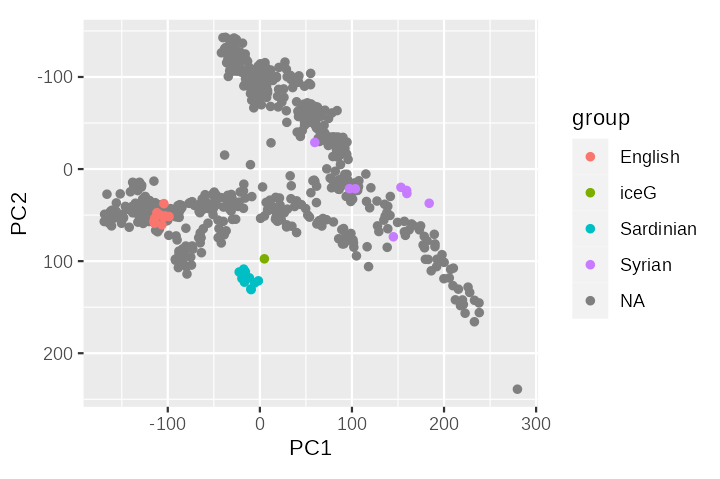
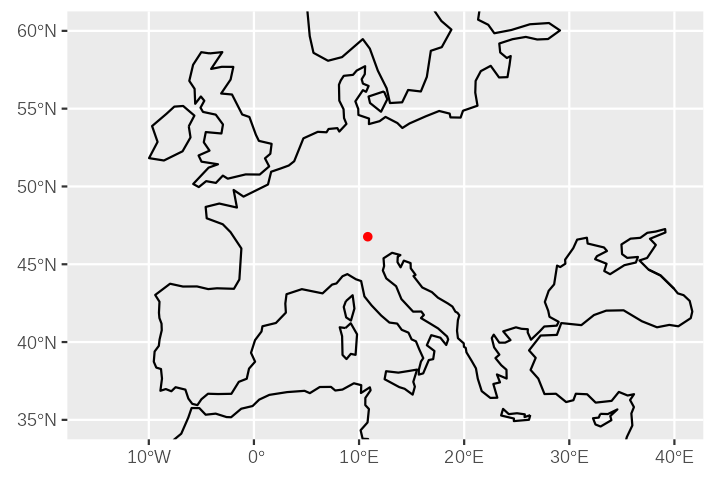
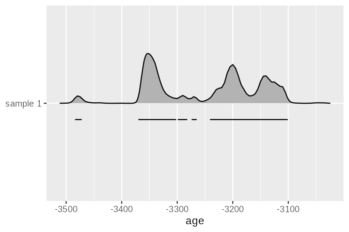

pca_out <- readRDS("scratch/pca_out.rds")Working with .janno context information in R
For data analysis and visualization an R-based workflow may be helpful. This is especially relevant if we want to incorporate spatial and temporal information.
Loading a .janno file into R
We previously prepared the PCA dataset and we can load it again into an R environment.
This result dataset lacks all context information for the individual samples, which renders it really difficult to make sense of the PCA plot without prior knowledge. We do have plenty of context information, though, in the .janno file of the iceWithRefSmall package we prepared for the PCA in the first place. How do we access this?
As the .janno file is a simple .tsv file, we can easily read it into R, for example with readr::read_tsv() into a generic tibble.
Beyond that the Poseidon ecosystem includes an R package janno to read .janno files into a more specific janno data structure with some additional features.
We can install the package on the R console with
if(!require('remotes')) install.packages('remotes')
remotes::install_github('poseidon-framework/janno')and then read a .janno file with
ref_janno <- janno::read_janno("scratch/iceWithRefSmall")
Note
janno::read_janno() applies a structural validity check to the input, transforms the columns to the correct data type for specified .janno columns and correctly detects list columns.
At the same time the janno S3 class is derived from tibble and thus fully interoperable with the tidyverse.
With this information ready we can easily enrich our PCA plot to make it more readable.
pca_with_context <- dplyr::bind_cols(
pca_out$pca.sample_coordinates,
group = unlist(ref_janno$Group_Name)
)library(magrittr)
library(ggplot2)
p <- pca_with_context %>%
dplyr::mutate(group = dplyr::case_match(
group,
c("iceG", "English", "Syrian", "Sardinian") ~ group,
.default = NA
)) %>%
dplyr::arrange(!is.na(group), group) %>%
ggplot() +
geom_point(
aes(x = PC1, y = PC2, colour = group)
) +
scale_y_reverse() +
coord_fixed()
Adding new information to a .janno file
Now what about our own sample? As a first step we add the new information we received from Prof. P. to our Poseidon package ice. We do so by editing the .janno file at ice/ice.janno.
Starting from
| Poseidon_ID | Genetic_Sex | Group_Name | Latitude | Longitude |
|---|---|---|---|---|
| ice | M | iceG | 46.77 | 10.83 |
we add some additional columns for the age information.
| Date_Type | Date_C14_Uncal_BP | Date_C14_Uncal_BP_Err | Date_BC_AD_Start | Date_BC_AD_Stop |
|---|---|---|---|---|
| C14 | 4555 | 34 | n/a | n/a |
Note
All pre-defined .janno file columns are specified as part of the package schema here. Beyond that the Poseidon websites features more detailed and concrete explanations of the columns here, for example for all columns related to sample age and dating: Temporal position.
Optionally we can document this change to the package in a changelog, which we add to the package in the form of a CHANGELOG.md file.
CHANGELOG.md
- V 0.2.0: Added a radiocarbon date for the ice sample.We should then also update the package version number in our POSEIDON.yml file and link the changelog there:
POSEIDON.yml
poseidonVersion: 2.7.1
title: ice
packageVersion: 0.2.0
lastModified: 2024-01-24
...
changelogFile: CHANGELOG.mdAfter implementing the change we should again check the structural validity of the package with trident validate.
trident validate -d iceSpatial and temporal data in .janno files
With the data added, we can load the .janno file for our sample into R.
ice_janno <- janno::read_janno("scratch/ice")As the janno class is derived from tibble we can easily transform it to a spatial object as e.g. specified by the sf library. And we can then plot it together with arbitrary spatial reference data to create a (simple) map.
ice_sf <- ice_janno %>%
sf::st_as_sf(coords = c("Longitude", "Latitude"), crs = 4326)
worldwide_coastline <- rnaturalearth::ne_coastline()
p <- ggplot() +
geom_sf(data = worldwide_coastline) +
geom_sf(data = ice_sf, color = "red") +
coord_sf(xlim = c(-15,40), ylim = c(35, 60))
For temporal information, the janno package includes a special convenience function: janno::process_age(). It can handle all kind of age data that can be specified for an individual sample in a Poseidon package.
For C14 date calibration it runs (sum)calibration through the Bchron R package1 to generate a post-calibration probability distribution, which in turn can be used for derived measures.
process_age() appends up to five additional (list) columns to the janno file:
ice_age <- ice_janno %>% janno::process_age()The Date_BC_AD_*_Derived columns simply include probable start, end and median ages:
ice_age$Date_BC_AD_Start_Derived
ice_age$Date_BC_AD_Median_Derived
ice_age$Date_BC_AD_Stop_Derivedice_age$Date_BC_AD_Prob includes the full (post-calibration) year-wise probability distribution for a given sample.
We can plot the distribution similar to how for example OxCal would do it for us.
prob <- ice_age$Date_BC_AD_Prob[[1]]
p <- ggplot() +
ggridges::geom_ridgeline(
data = prob,
mapping = aes(x = age, height = sum_dens, y = "sample 1"), scale = 30
) +
geom_line(
data = prob %>%
dplyr::mutate(
ts = cumsum(two_sigma != dplyr::lag(two_sigma, default = FALSE))
) %>%
dplyr::filter(two_sigma),
mapping = aes(x = age, y = "sample 1", group = ts),
position = position_nudge(y = -0.1)
) +
theme(axis.title.y = element_blank())
Random ages sampled from this distribution are available in ice_age$Date_BC_AD_Sample and may be even more important for further analyses.
Learn more about…
- The janno R package: janno R package
- The Natural Earth Data project: Geodata download
- The Bchron R package: Vignette: Calibrating radiocarbon dates
References
Haslett, John, and Andrew C Parnell. 2008. “A Simple Monotone Process with Application to Radiocarbon-Dated Depth Chronologies.” Journal of the Royal Statistical Society: Series C (Applied Statistics) 57 (4): 399–418. https://rss.onlinelibrary.wiley.com/doi/full/10.1111/j.1467-9876.2008.00623.x.